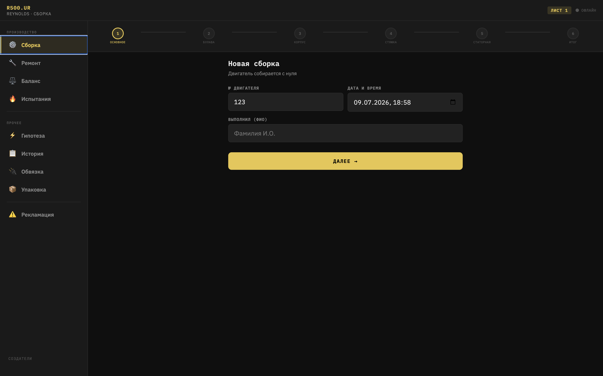
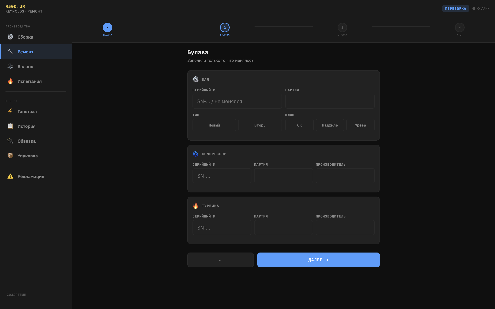
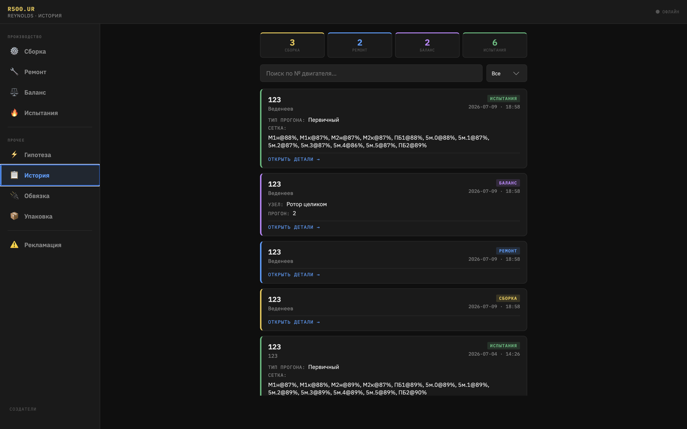
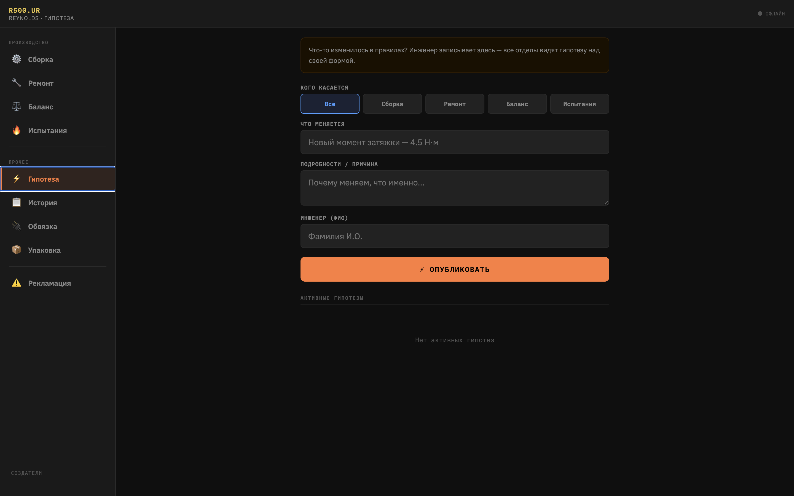
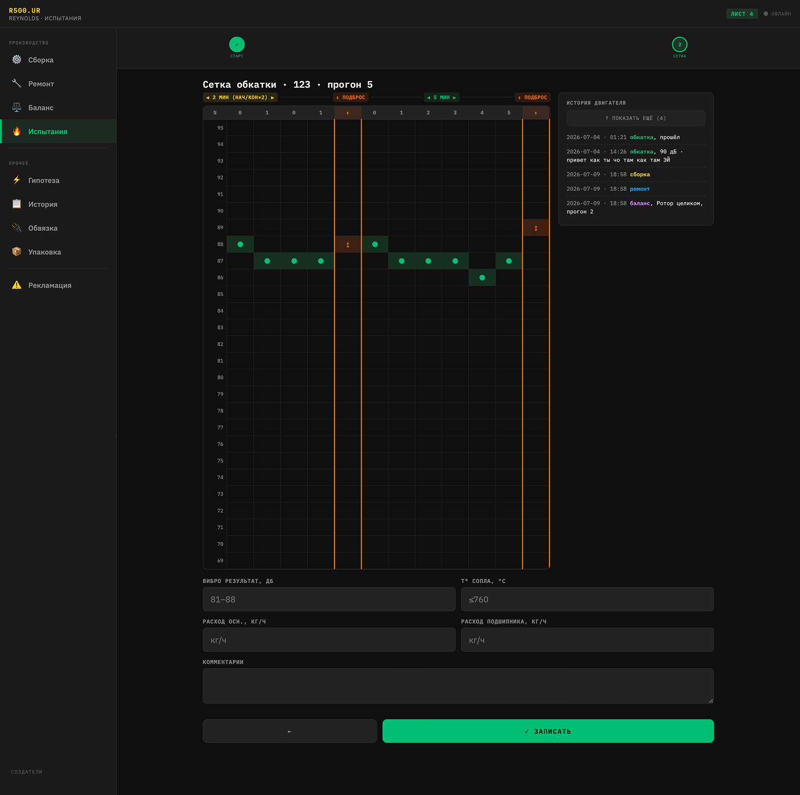

R500
Электронный журнал сборки, ремонта, балансировки и испытаний роторного двигателя малой тяги. Заменяю бумажный формуляр с одной подписью на общую историю, которую видят все.
- Product designer + единственный IT-внедритель
- Внутренний B2B-инструмент
- 2 недели назад: идея → первая раскатка
- В разработке · тестируем в цеху

Пришёл слесарем-сборщиком, увидел продуктовую проблему
Устроился на производство слесарем-сборщиком роторных двигателей малой тяги — без единого закрученного винта за плечами до этого. Задача была не «внедрить дизайн», а собирать двигатели руками. Но 5+ лет продуктового мышления не выключаются на проходной.
Сборка двигателя R500 — это цепочка операций: сборка, балансировка ротора, испытания, при необходимости — ремонт. Каждую операцию может делать другой человек, часто в другую смену, иногда через несколько дней или недель.
Подпись одна, а рук — пять и больше
Весь процесс фиксировался в бумажном формуляре. Расписывался за сборку — я. Дальше двигатель уходит к другому мастеру на балансировку, потом к испытателю, при браке — к ремонтнику. Формально все эти операции проведут другие люди. Но в документе с самого начала стоит моя подпись.
Если через месяц с ротором что-то случится — придут ко мне. Хотя после моей операции его физически трогали ещё пять и больше человек, каждый со своей зоной ответственности, которая нигде отдельно не зафиксирована.
Бумага не хранит контекст. Она не показывает, что двигатель уже второй раз идёт по кругу сборка → балансировка → испытания, и что в первый круг ротор не прошёл именно балансировку. Каждый следующий человек в цепочке видит текущую операцию, но не видит историю.
Один журнал на все операции вместо одной подписи под всеми операциями
Предложил и навайбкодил простой онлайн-журнал: каждая операция — сборка, ремонт, балансировка, испытания — фиксируется отдельно, человеком, который её реально выполнил. Внутри каждой операции — свои этапы, а не одна галочка «сделано».
Здесь роль шире, чем «продуктовый дизайнер». На этом производстве я один и продакт, и IT-внедритель: сам настраиваю программу, сам иду к испытателям, слесарям и руководителям смены за требованиями, сам дорабатываю, когда что-то в цеху работает не так, как казалось на бумаге.
Что попало в журнал
- Операции по ролям: сборка, ремонт, балансировка, испытания — каждая закрывается тем, кто её выполнял, а не тем, кто первым расписался в документе.
- Этапы внутри операции: каждая операция разложена на шаги, а не сдаётся одной подписью «готово».
- История по двигателю: карточка ротора хранит все операции, которые с ним происходили, и кто их выполнял.
- Гипотезы: если инженер меняет правило (момент затяжки, допуск), он публикует гипотезу — и она всплывает над формой во всех отделах. Никаких «а нам не сказали».



Если ротор идёт по второму кругу, история идёт вместе с ним
Ротор не всегда проходит сборку → балансировку → испытания с первого раза. Бывает второй и третий круг: не прошёл испытания — вернулся на балансировку, не прошла балансировка — вернулся на ремонт.
Для таких роторов журнал ведёт отдельный лог циклов. Если двигатель прошёл больше 2–3 кругов, при заполнении текущих испытаний испытатель сразу видит, что происходило в прошлые круги — не нужно поднимать бумажный архив или спрашивать у коллег по цепочке.

Обычный веб-стек и ноутбук вместо сервера
На производстве нет своей IT-инфраструктуры под подобные внутренние сервисы, и разворачивать её ради pet-проекта одного дизайнера было бы избыточно. Решение — обычный веб-стек (HTML/JS) и локальный сервер: ноутбук, который просто всегда включён и раздаёт журнал по локальной сети.
5 планшетов на ключевых точках цеха синхронизируются с этим сервером — все видят одну и ту же историю по каждому двигателю в реальном времени. Интерфейс кроссплатформенный: одинаково открывается на компьютере, планшете и телефоне, так что подключиться может кто угодно с любого устройства в сети, не только с выданных планшетов.
Живой сценарий: планшеты заняты — захожу в локалку со своего телефона, вношу запись, и она тут же появляется на всех остальных устройствах. Никакой привязки к «специальному рабочему месту».
Тестируем в бою прямо в цеху
Неделя ушла на сбор требований и вайб-кодинг, дальше — раскатка на реальные устройства в цеху. Сейчас журнал не в архиве «сделал и забыл» — он живой: раздаю его на планшеты и даю людям попользоваться в реальной работе, а не на демо.
Параллельно собираю обратную связь напрямую от испытателей, слесарей и руководителей смены и дорабатываю функционал в моменте — если этап неудобно закрывать, если не хватает поля, если статус на экране не совпадает с тем, что реально происходит с ротором. Метрик по внедрению пока нет намеренно: рано, сначала инструмент должен стать удобным для тех, кто в нём работает каждый день.
Реакция цеха при этом уже конкретная и не вежливая из вежливости: людям это реально нужно. Каждый понимает цену «человеческого фактора» в записях и рад инструменту, который снимает вопрос «кто это делал и когда» с одного человека и распределяет по всем, кто фактически трогал ротор.
Задача решается не макетом, а распределением ответственности
Формально запроса на дизайн вообще не было — я слесарь, а не штатный продакт на этом производстве. Задача нашлась там, где обычно её не ищут: в наблюдении за тем, кто физически подписывается за чужую работу. Это тот же навык, что и в других кейсах — не рисовать то, что просят, а разбираться, что на самом деле сломано.
Цель — полностью уйти от бумаги. Пока журнал работает параллельно с формуляром, но по мере доверия к системе бумага должна уйти совсем. Кейс намеренно описан как незавершённый: функционал продолжает дорабатываться по фидбеку из цеха, а не заморожен на первой рабочей версии. В работе: расширение ролей (мастер смены видит сводку по всем роторам в цеху разом), уведомления, когда ротор простаивает на операции дольше нормы, и экспорт истории в PDF для тех редких случаев, когда формуляр всё же нужен на бумаге.